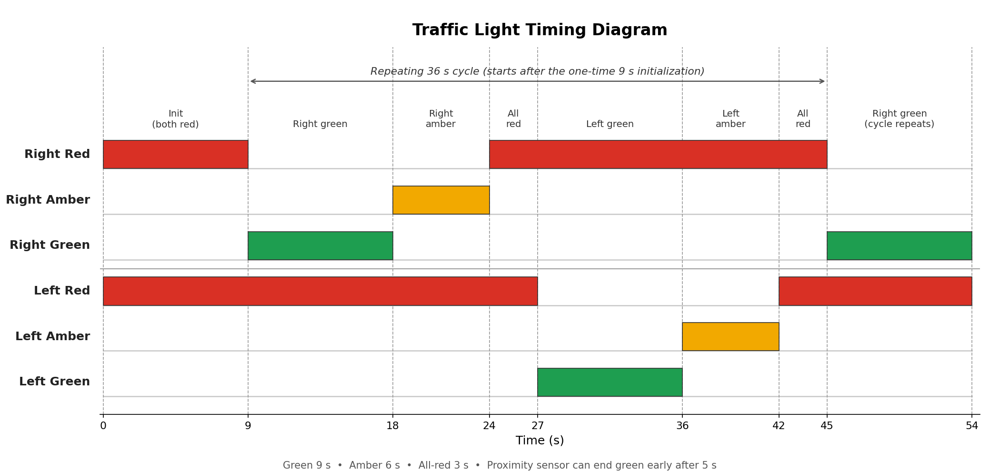
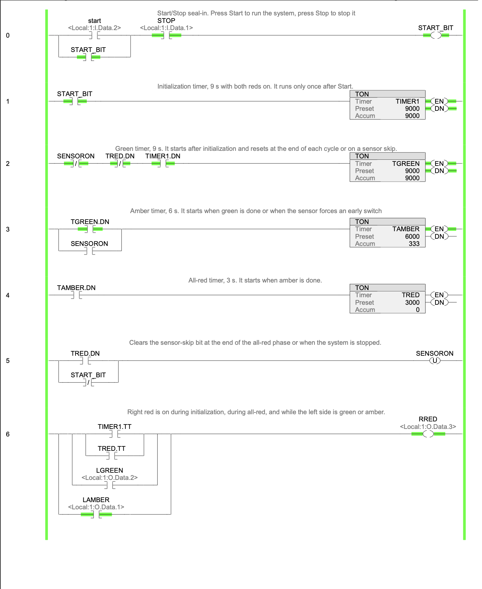
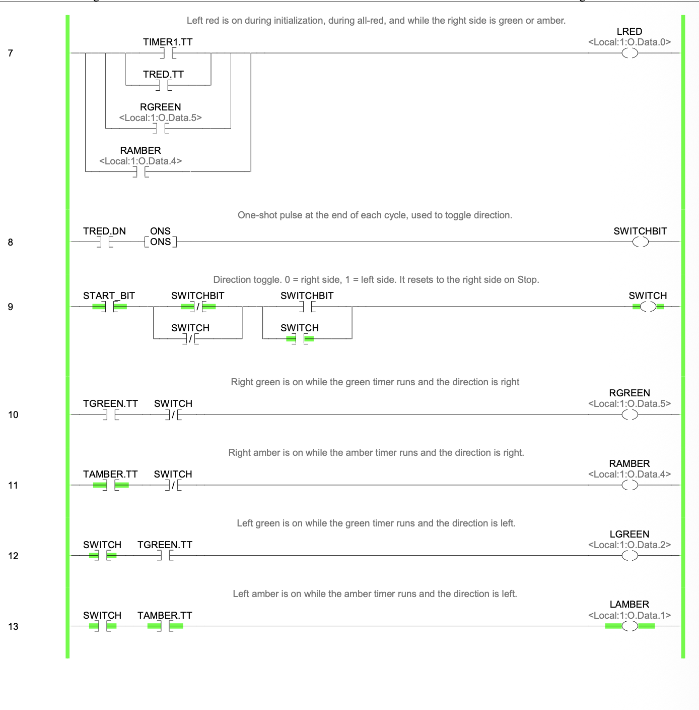
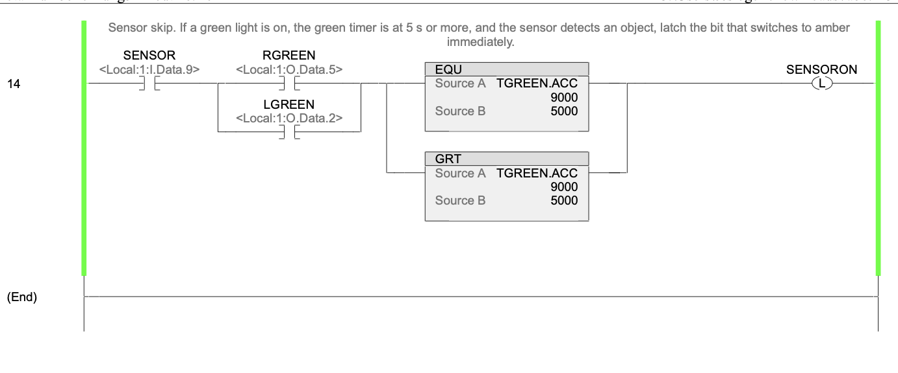
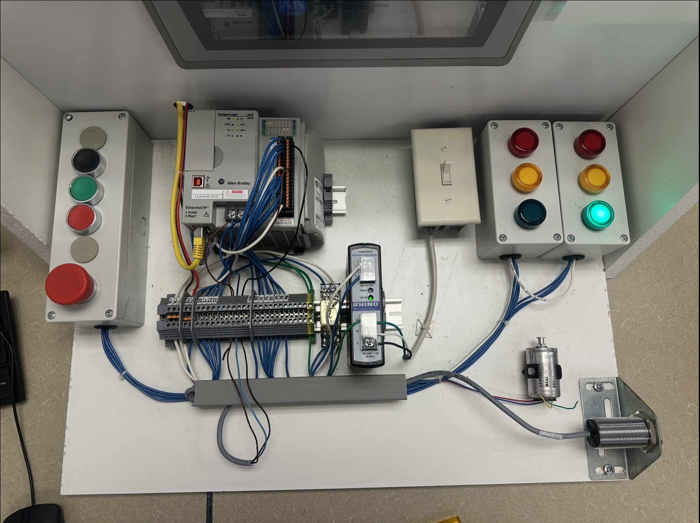

CompactLogix Traffic Light Controller
A two-direction intersection controller built in Studio 5000 and tested on a physical lab station. Four chained TON timers run the light sequence, a one-shot and XOR toggle alternate the direction, and a proximity sensor switches green to amber early when traffic is detected.
How it works
A Start/Stop push button runs the system. On start, both directions show red for 9 seconds. The lights then run a continuous Green → Amber → Red sequence that alternates between the two directions. If a green light has been on for at least 5 seconds and the sensor detects an object, the system switches to amber early.
Each phase's DN bit starts the next phase, and each phase's TT bit keeps its light on while the timer runs.
| Phase | Duration | Lights |
|---|---|---|
| Initialization (once after Start) | 9 s | Both reds |
| Green | 9 s | Active side green, other side red |
| Amber | 6 s | Active side amber, other side red |
| All-red | 3 s | Both reds, then the direction switches |
I/O map
| Device | Address |
|---|---|
| Start push button | Local:1:I.Data.2 |
| Stop push button | Local:1:I.Data.1 |
| Proximity sensor | Local:1:I.Data.9 |
| Left red / amber / green | Local:1:O.Data.0 / .1 / .2 |
| Right red / amber / green | Local:1:O.Data.3 / .4 / .5 |
Logic highlights
- Rungs 0–4: Start/Stop seal-in, then the four phase timers:
TIMER1(9 s init),TGREEN(9 s),TAMBER(6 s), andTRED(3 s). - Rungs 6–7: Each red light is on during initialization, during all-red, and while the opposite side is green or amber.
- Rungs 8–9: An ONS on
TRED.DNpulses once per cycle and feeds a single XOR rung that flips the direction. - Rungs 10–13: Green and amber are driven by
TGREEN.TTandTAMBER.TT, gated by the direction bit. - Rung 14: If green is on,
TGREEN.ACC≥ 5000 ms (EQU/GRT pair), and the sensor detects an object,SENSORONlatches to switch to amber immediately.
Debugging on hardware
- The sensor didn't actually end the green phase. Amber came on, but the green timer kept running and the amber timer never started, so the lights flickered. I made the sensor bit a latch (
SENSORON) that resets the green timer and starts the amber timer. - The direction sometimes switched twice. Latching and unlatching the direction on different timer bits let the same side run twice in a row. I replaced that with a one-shot on the all-red done bit feeding a single XOR rung, so the direction flips exactly once per cycle.
Testing
Downloaded with no errors. On hardware: Start gives 9 s of both reds, then the right side runs green, amber and all-red, and the left side follows. Stop halts the system and resets the direction. Triggering the sensor after 5 s of green switches to amber immediately.
Screenshots









